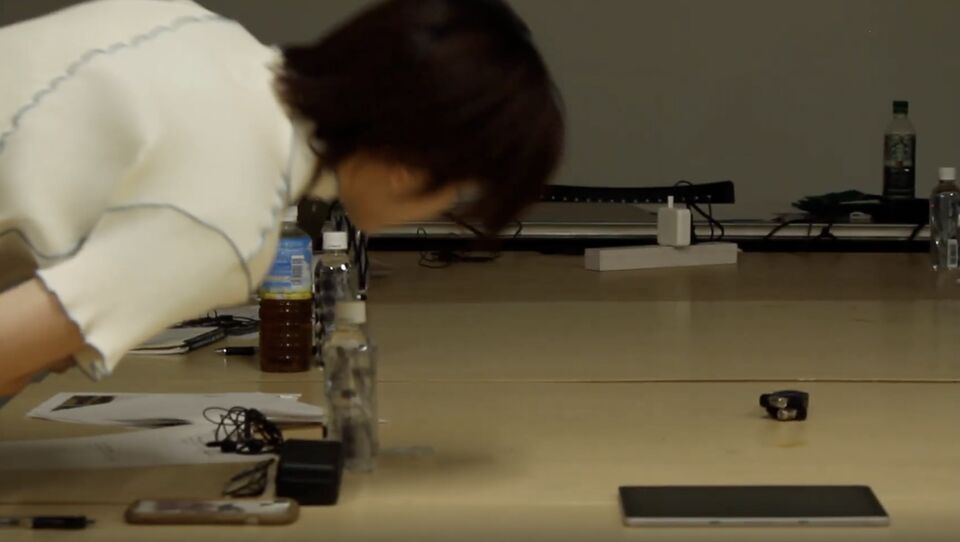
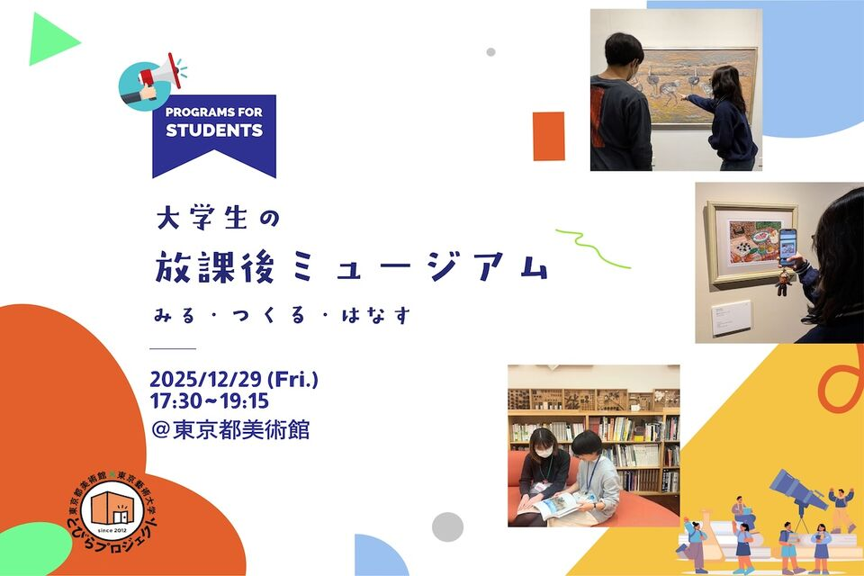

Selected Works — 2025 – 2026
Work
Sound Art／Media Art／Installation／Workshop／Research／
Sound Art／Media Art／Installation／Workshop／Research／

絵画を聴く
モネ《睡蓮の池と日本の橋》の音風景を空間に立ち上げた没入型サウンド・インスタレーション。 ASIBA Creative League 4期プロジェクト。

聴く絵画をつくる
参加者が自作Webアプリで音を選び、物理空間に配置して「一つの聴く絵画」を共作する 対話型ワークショップ。

Resonance
土地や空間に存在する「境界線の響き合い」を解釈するサイトスペシフィックなサウンド・ インスタレーション。Sasebo Sound Chronicle Award ファイナリスト選出。

耳を澄ますための装置
個々人で切り取る視点が異なってしまう「視線の非対称性」をテーマにしたサウンド・ インスタレーション。

大学生の放課後ミュージアム
東京都美術館「とびらプロジェクト」にて自ら企画・運営した、大学生を対象とする 対話型鑑賞プログラム。